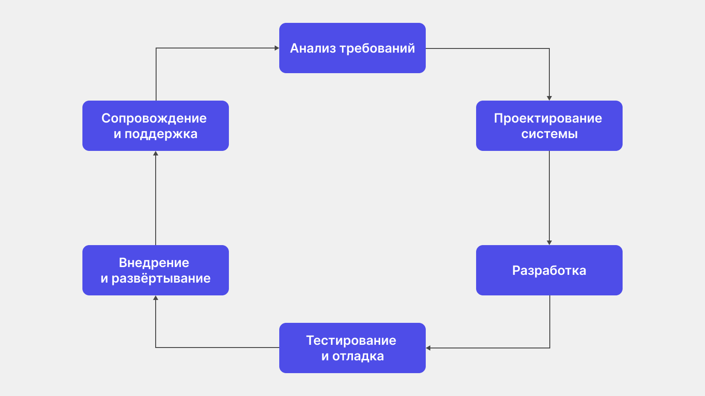

Обо мне
Виталий Пономарёв
SRE Lead в Т-Банке, продукт S3 as a Service
- ✅ Опыт разработки на Go, PHP, Python
- ✅ Проектирование высоконагруженных систем
- ✅ Построение процессов поддержки с нуля
- ✅ Мобильные сети, VAS сервисы мобильных операторов
- ✅ Знаю, что такое S3
Наблюдаемость
Курс: промышленная разработка
Блок 6: Observability (Наблюдаемость)
Понятие отслеживаемости.
Основные гарантии обеспечения: SLA, SLO, SLI.
Метрики для отслеживания стабильности инфраструктуры.
Виды отслеживаемости: мониторинг, логирование, трассировка.
Виды систем сбора метрик и логирования.
Отличие стеков ELK (ElasticSearch, LogStash, Kibana) от стека LGTM (Loki, Grafana, Tempo, Mimir).
Интеграция инфраструктуры отслеживания в Kubernetes-кластере: Prometheus Service Discovery
Жизненный цикл приложения

Вы уже умеете:
- ✅ Писать код на различных языках программирования
- ✅ Работать с базами данных и сетями
- ✅ Проектировать архитектуру систем
- ✅ Обеспечивать безопасность
- ✅ Понимаете, что такое многопоточность
- ✅ Знакомы с сетями
Но что происходит дальше?
Дальше начинается занимательный мир внедрения и эксплуатации.
Приложение работает, пользователи нажимают на кнопки, данные текут через сервисы.
Что-то работает быстро, что-то медленно.
И тут возникает главный вопрос: как понять, что система работает правильно и работает ли она вообще?
Надёжность. Зачем она нужна?
Бизнес-приложения должны выполнять условия для соответствия ожиданиям:
Функциональность
Система делает то, что должна
Надёжность
Система работает стабильно
Производительность
Система работает быстро
Безопасность
Система защищена
Механизмы обеспечения надёжности
🏗️ Архитектурные
- Репликация
- Шардирование
- Балансировка нагрузки
- Автоматический failover
🛡️ Паттерны устойчивости
- Cirtuit breaker
- Failover
- Таймаут
- Переповторы (retry)
⚙️ Инфраструктурные
- Автомасштабирование
- Healthckek'и
- Канареечное развёртывание
📋 Процессные
- Ревью кода
- CI/CD для деплоя
- Change management
- Postmortem
🧪 Тестирование
- Модульные тесты
- Хаос-инжиниринг
- Интеграционные тесты
👁️ Наблюдаемость
- Метрики
- Логи
- Трассировка
- Оповещение
По возможности выбирал термины на русском языке, но не везде есть устоявшиеся варианты.
Что такое наблюдаемость?
Представьте: пользователи пишут, что "всё тормозит". Метрики сервера в норме. Где проблема?
Наблюдаемость — это возможность понять, что происходит внутри системы, не влезая в её код.
📊 Мониторинг
Метрики
📝 Логирование
События
🔍 Трассировка
Запросы
Зачем нужны метрики?
Наблюдаемость даёт нам инструменты, но что именно измерять?
Проблема: можно собирать тысячи метрик, но понимать, хорошо ли работает система?
Сценарий из практики
Утро понедельника:
- ✅ CPU в норме (45%)
- ✅ Память в порядке (60%)
- ✅ Диск свободен (70%)
- ❌ Но клиенты звонят: "Приложение тормозит!"
Вопрос: почему инфраструктурные метрики в норме, а пользователи недовольны?
Инфраструктурные vs Бизнес-метрики
Инфраструктурные
- CPU usage
- Memory usage
- Disk I/O
- Network throughput
❌ Не отражают опыт пользователя
Бизнес-метрики
- Доступность API
- Время ответа
- Процент ошибок
- Успешность транзакций
✅ Показывают, что чувствует пользователь
Индикаторы надёжности
SLI
Service Level Indicator
Индикатор уровня сервиса
Что измеряем?
Метрика → Число (99.5%, 150мс)
SLO
Service Level Objective
Целевой уровень сервиса
К чему стремимся?
Цель → Порог (≥99.5%)
SLA
Service Level Agreement
Соглашение об уровне сервиса
Что обещаем?
Договор → Последствия (штрафы)
Зачем нужны SLA, SLO, SLI?
- Общий язык: разработчики, менеджмент и клиенты говорят на одном языке
- Приоритизация: понятно, какие проблемы критичны, а какие можно отложить
- Объективность: не "мне кажется медленно", а "p99 > 200мс"
- Алертинг: алерты на то, что действительно важно
- Баланс: между надёжностью и скоростью разработки
Иерархия метрик
SLI
Пример: 99.5% запросов < 200мс
Метрика → Измерение
- Доступность: % успешных запросов
- Задержка: p50, p95, p99
- Ошибки: % failed requests
SLO
Пример: 99.9% запросов < 300мс за месяц
Цель → Порог
- Внутренняя цель команды
- Обычно строже чем SLA
- Баланс надёжности и скорости
SLA
Пример: При < 99% — скидка 10%
Договор → Последствия
- Юридическое обязательство
- Штрафы при нарушении
- Компенсации клиентам
SLI (Service Level Indicator)
Индикатор уровня сервиса — метрика, измеряющая конкретный аспект работы сервиса с точки зрения пользователя
SLI: Примеры для S3 хранилища
# Для объектного хранилища S3:
1. Availability (Доступность)
successful_requests / total_requests * 100%
2. Latency (Задержка)
p50, p95, p99 времени ответа API
3. Throughput (Пропускная способность)
запросов в секунду, ГБ/сек
4. Durability (Сохранность данных)
процент успешных операций записи
SLI: Как выбирать
- Измеряйте опыт пользователя: не CPU/RAM, а доступность API
- Простые для понимания: команда должна понимать метрику
- Стабильные: без лишнего шума
- Действенные: можно повлиять на метрику
SLO (Service Level Objective)
Целевой уровень сервиса — значение SLI, к которому стремимся
SLO: Примеры для S3 хранилища
# Целевые значения для S3:
Availability:
→ 99.95% за 30 дней (успешных запросов)
Latency (p99):
→ GET-запросы: < 100ms
→ PUT-запросы: < 200ms
Throughput:
→ 10 ГБ/сек на кластер
Durability:
→ 99.999999999% (11 девяток)SLO: Баланс
Допустимый даунтайм:
| Доступность | В месяц | В год |
|---|---|---|
| 99% | 7.3 часа | 3.65 дня |
| 99.9% | 43.8 минуты | 8.76 часа |
| 99.95% | 21.9 минуты | 4.38 часа |
| 99.99% | 4.4 минуты | 52.6 минуты |
| 99.999% | 26 секунд | 5.26 минуты |
Слишком высокий
99.999%
Очень дорого
Инновации тормозятся
Правильный
99.9-99.95%
Баланс надёжности
и скорости разработки
Слишком низкий
99%
Клиенты недовольны
Теряем бизнес
SLA (Service Level Agreement)
Соглашение об уровне сервиса — формальный договор с клиентами
SLA: Пример для S3 хранилища
SLA для объектного хранилища:
─────────────────────────────
• Доступность: 99.9% в месяц
• Сохранность: 99.999999999%
Последствия нарушения:
• < 99.9% но ≥ 99.0%: кредит 10%
• < 99.0%: кредит 25%
• < 95.0%: кредит 50%
Исключения:
• Плановые работы (уведомление за 72ч)
• Форс-мажорSLA vs SLO vs SLI
| SLI | SLO | SLA | |
|---|---|---|---|
| Что это | Метрика | Цель | Обязательство |
| Для кого | Команда | Команда | Клиенты |
| Пример | 99.5% | 99.5% | 99.0% + штрафы |
| Последствия | Алерт | Работа над ошибками | Компенсации |
Давайте спроектируем вместе!
Представьте: вы разрабатываете сервис уведомлений
Контекст: сервис отправляет push/email/SMS уведомления пользователям банка
Вопрос 1: Какие SLI выбрать?
Что будем измерять для сервиса уведомлений?
💡 Варианты:
- Процент доставленных уведомлений?
- Время доставки (от события до получения)?
- Процент успешных вызовов API?
- Количество отправленных уведомлений в секунду?
Вопрос 2: Какие SLO установить?
Какие целевые значения разумны?
💡 Пример:
- Delivery Rate: 99.5% за 30 дней
- Time to Deliver (p95): < 30 секунд
- API Success Rate: 99.9%
Вопрос 3: Что снимать с приложения?
Какие метрики и логи нужны?
💡 Метрики:
- notifications_sent_total{type="push|email|sms", status="success|failed"}
- notification_delivery_duration_seconds (histogram)
- api_requests_total{endpoint, status_code}
💡 Логи:
- Факт отправки уведомления (кому, тип, результат)
- Ошибки внешних провайдеров
- Тайминги на каждом этапе
Виды отслеживаемости
Мониторинг (Метрики)
# Что это:
Числовые данные о состоянии системы во времени
# Примеры:
- CPU usage: 45%
- Request rate: 1000 req/s
- Error rate: 0.5%
- p99 latency: 250ms
# Характеристики:
- Агрегированные данные
- Временные ряды
- Низкий объём храненияЛогирование
# Что это:
Записи о событиях в системе
# Пример:
{
"timestamp": "2025-04-04T10:15:30Z",
"level": "ERROR",
"service": "notification-svc",
"message": "Failed to send push notification",
"user_id": "12345",
"error": "connection timeout",
"trace_id": "abc-123-xyz"
}
# Характеристики:
- Структурированные данные (JSON)
- Высокий объём
- Детальная информацияТрассировка
# Что это:
Отслеживание пути запроса через все сервисы
# Пример trace:
[API Gateway] → [Auth Service] → [Notification Service] → [Push Provider]
↓ ↓ ↓ ↓
15ms 25ms 45ms 120ms
# Характеристики:
- Распределённые системы
- End-to-end видимость
- Выявление узких местМетрики vs Логи
| Метрики | Логи |
|---|---|
| Числа во времени | Текстовые записи |
| Агрегированные | Детальные события |
| Мало места | Много места |
| "Что происходит?" | "Почему произошло?" |
| Алертинг | Расследование |
Системы сбора метрик
Prometheus
- Pull-модель: сам забирает метрики
- Временные ряды: хранение + агрегация
- PromQL: язык запросов
- Service Discovery: авто-обнаружение сервисов
- Alertmanager: алертинг
# prometheus.yml
scrape_configs:
- job_name: 'kubernetes-pods'
kubernetes_sd_configs:
- role: pod
relabel_configs:
- source_labels: [__meta_kubernetes_pod_annotation_prometheus_io_scrape]
action: keep
regex: truePrometheus в Kubernetes
# Service Discovery через Kubernetes:
1. Prometheus сканирует K8s API
2. Находит Pod'ы с аннотациями:
metadata:
annotations:
prometheus.io/scrape: "true"
prometheus.io/port: "8080"
prometheus.io/path: "/metrics"
3. Автоматически добавляет в targets
4. Собирает метрики по /metrics endpointЭкспортеры метрик
| Экспортер | Что собирает |
|---|---|
| node_exporter | CPU, RAM, Disk, Network хоста |
| kube-state-metrics | Состояние объектов K8s |
| cadvisor | Метрики контейнеров |
| postgres_exporter | Метрики PostgreSQL |
| redis_exporter | Метрики Redis |
| blackbox_exporter | HTTP/TCP проверки |
Пример метрик Prometheus
# Метрики приложения:
http_requests_total{method="POST", status="200"} 15432
http_request_duration_seconds_bucket{le="0.1"} 8234
process_resident_memory_bytes 234567890
go_goroutines 45
# Метрики ноды (node_exporter):
node_cpu_seconds_total{cpu="0", mode="user"} 123456
node_memory_MemAvailable_bytes 8765432100
node_disk_read_bytes_total{device="sda"} 987654321Системы сбора логов
ELK Stack
# Архитектура:
Application → Filebeat → Logstash → Elasticsearch → Kibana
↓ ↓ ↓ ↓ ↓
Пишет Собирает Обрабатывает Хранит Визуализирует
логи логи фильтрует и индексирует дашборды- Filebeat: лёгкий агент для сбора логов
- Logstash: обработка и трансформация
- Elasticsearch: хранение и поиск
- Kibana: визуализация и анализ
Loki (от Grafana Labs)
# Архитектура:
Application → Promtail → Loki → Grafana
↓ ↓ ↓ ↓
Пишет Собирает Хранит Визуализирует
логи логи логи + запросы- Promtail: агент для сбора (аналог Filebeat)
- Loki: лёгкое хранение, индексация по лейблам
- Grafana: единый UI для метрик и логов
- Плюсы: дешевле ELK, лучше интеграция с Prometheus
Агенты сбора логов
| Агент | Описание |
|---|---|
| Filebeat | Часть Elastic Stack, надёжный, много интеграций |
| Vector | Высокая производительность (Rust), гибкая маршрутизация |
| Promtail | Специально для Loki, простая конфигурация |
| Fluentd/Fluent Bit | CNCF проект, богатая экосистема плагинов |
Пример конфигурации Filebeat
# filebeat.yml
filebeat.inputs:
- type: log
enabled: true
paths:
- /var/log/app/*.log
json.keys_under_root: true
output.elasticsearch:
hosts: ["elasticsearch:9200"]
indices:
- index: "app-logs-%{+yyyy.MM.dd}"Системы трассировки
OpenTelemetry
- Стандарт де-факто: CNCF проект
- Unified API: метрики + логи + трассы
- Vendor-neutral: работает с любым бэкендом
# Архитектура:
Application (OTel SDK) → OTel Collector → Jaeger/TempoJaeger / Tempo
| Jaeger | Tempo |
|---|---|
| CNCF проект (Uber) | Grafana Labs |
| Полнофункциональный | Лёгкий, для Grafana |
| Сложнее в настройке | Простая конфигурация |
Итоги
Зачем это разработчику?
- Понимание бизнеса: связь кода с надежностью сервиса
- Архитектурные решения: закладываем наблюдаемость с начала
- Меньше он-коллов: хорошие SLO = меньше ночных звонков
- Быстрое расследование: логи и трассы экономят время
- Карьерный рост: SRE-мышление ценится на рынке
Вопросы?
Спасибо за внимание!